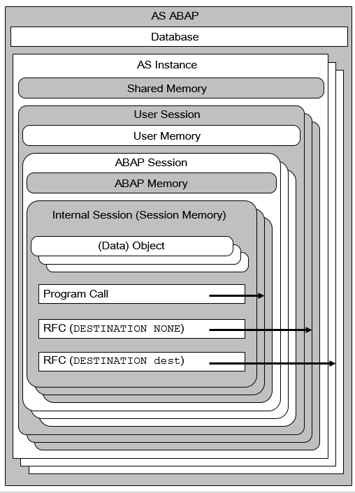

AS ABAP Release 754, ©Copyright 2019 SAP SE. All rights reserved.
ABAP Keyword Documentation → ABAP - Overview → ABAP Programs in AS ABAP →Sessions and Memory Areas
This section describes the sessions in AS ABAP where ABAP programs are executed and the associated memory areas that can be accessed by an ABAP program. For a more general and technically more detailed description, see Documentation Memory Management in SAP Help Portal.
The following figure shows the general organization of sessions for ABAP programs and their memory areas up to the internal session level:

AS Instance
An AS ABAP can be distributed across multiple AS Instancess. If an AS ABAP is implemented using multiple AS Instancess, they are usually exist as separate instances on multiple host computers, which do not have to have the same operating system. It is also possible, however, for multiple AS Instancess of one or more AS ABAPs to exist as instances on the same host computer. AS Instancess communicate with the presentation layer, the database layer, and with each other using the message server. The most important components of an AS Instance are its work processes, the number and type of which are determined when the AS ABAP is started. An ABAP program is executed by a suitable AS Instance work process.
The transaction SM51 shows an overview of the AS Instances of the current AS ABAP and which host computers host instances of it. In ABAP programs, the name of the current AS Instance can be identified using the method GET_INSTANCE_NAME of the system class CL_ABAP_SYST. This name has the form hostname_sysid_instnr. Here, hostname is the name of the host computer of the AS Instance, sysid is the name of the AS ABAP, and instnr is the instance number of the AS Instance. The network name of the host computer that hosts an instance of the current AS Instance can be found in the system field sy-host.
Every AS Instance has access to the standard database of the AS ABAP. Every AS Instance has its own shared memory- The ABAP runtime environment uses the shared memory for programs, program data, and buffers (for example, in table buffering). ABAP programs can store shared objects and data clusters in the shared memory.
Note
The shared memory is frequently used and may therefore become a sparse resource, which can result in bottlenecks when explicitly storing data from ABAP programs.
Example
Gets the name of the current AS Instance.
cl_demo_output=>display( cl_abap_syst=>get_instance_name( ) ).
User Session
Logging on to an AS Instance opens a user session. Logons take place using SAP GUI, the RFC interface, or ICF (including APC). A user session is assigned a standalone memory area, the user memory, which can be used as follows in ABAP programs:
The maximum number of user sessions is configured using the profile parameter rdisp/tm_max_no. The profile parameter rdisp/rfc_max_login determines which percentage of the sessions can be opened using the RFC interface.
For more information, see User Sessions.
ABAP Session
An ABAP session is opened for each user session. Each ABAP session is assigned its own memory area of ABAP memory, in which data clusters can be stored. The programs of a call sequence share access to these clusters and the data is retained for as long as the top level transaction of the call sequence. The SAP Easy Access program does not function as a top level transaction for the ABAP memory.
Further ABAP sessions for a user session can be opened as followed:
A maximum of 16 ABAP sessions are possible per user session. The number of sessions actually possible for a system is determined by the profile parameter rdisp/max_alt_modes, whose default is 6.
Notes
Internal Session
Each call of an ABAP program creates a new internal session, in which the called program is loaded.
An internal session contains a session memory, itself divided into the areas heap and stack (from the perspective of an ABAP program). This is where the modifiable objects of the program are held. The non-modifiable program data is stored in the PXA. The session memory contains references to the necessary data in the PXA. Technically speaking, the session memory and the global PXA are stored in the shared memory of the AS Instance where they are the responsibility of SAP Memory Management.
In one ABAP session, there can be a maximum of nine internal sessions, which always belong to a call sequence. Data from the ABAP memory is always assigned to a call sequence.
On 64-bit platforms, an internal session can theoretically require up to 4 TB of memory. On 32-bit platforms, the theoretical upper limit is 4 GB. The practical upper limit is usually below the theoretical limit, since the actual physically installed main memory is the maximum available and divided up among all users.
Further information about the way ABAP programs are organized in an internal session can be found in Programs in the Internal Session.
Notes